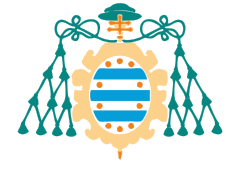

Medicarama
Company internship
Universitat de València
Studies started, not completed
My university studies began at UV, encouraged by my secondary school tutor. Although I left before completing the second year, I value what I learned and a way of thinking very different from memorising for an exam.

Universitat Politècnica de València
Software Engineering specialisation
Trading numbers for zeros and ones led me to computing. During four years of study, I discovered how the “magic box” I used for gaming worked. I chose Software Engineering because programming and building applications interested me most.

Universidad de Oviedo
Postgraduate studies
The master’s programme gives me the opportunity to keep learning about websites and web applications. Studying away from home is also a chance to meet people and experience something different.
This website is my project for applying what I have learned in the master’s programme and improving the user experience.
Code on GitHub (Opens in a new tab)Company internship
Work experience